Tansiyonun, kilon, ilaçların, cilt rutinin ve benlerin beş ayrı uygulamaya dağılmasın. Hepsi tek panelde — ve hepsi telefonunda kalır.
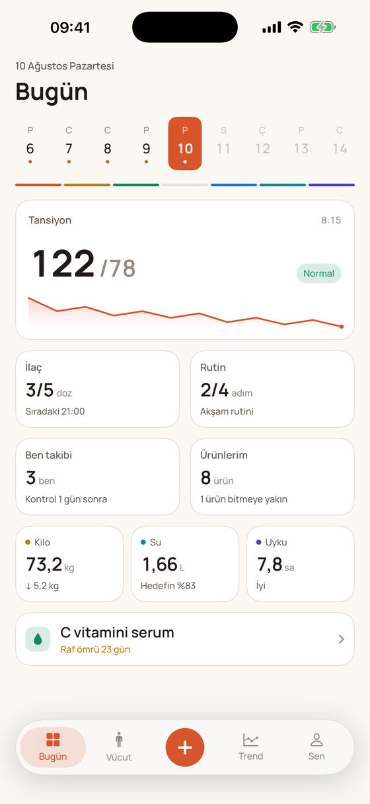
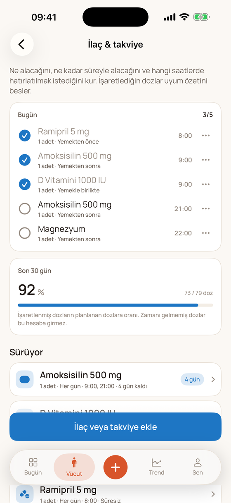
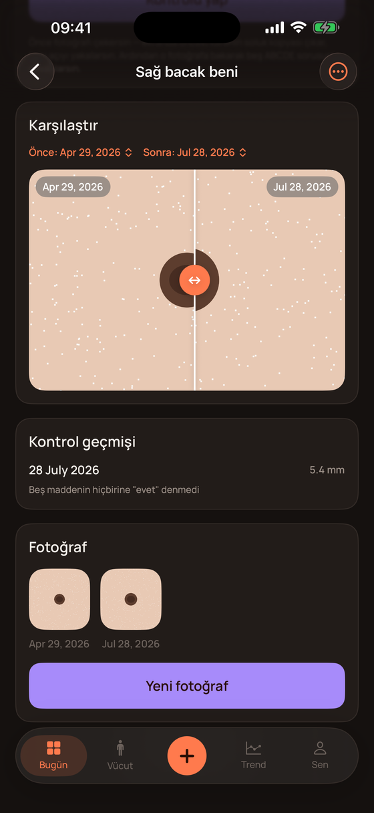
Bugün ekranı bir menü değil, veri gösterir. Üstteki gün şeridini kaydırarak geçmişe gidebilir, dün ne olduğuna ayrı bir sekmeye girmeden bakabilirsin.
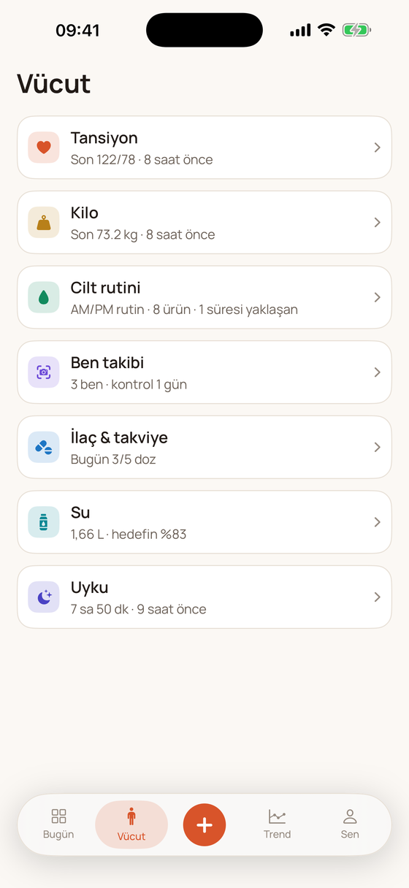
Ne kaydedeceğini seçtiğin liste saate göre sıralanır: sabah tansiyon ve tartı üstte, akşam rutin üstte, sabahın ilk saatlerinde “dün gece nasıldı” en üstte.
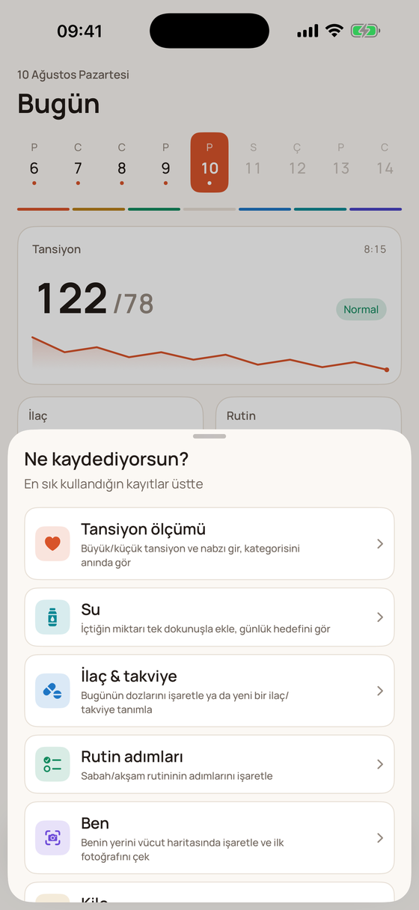
Büyük/küçük tansiyon ve nabız; ölçüme “sabah”, “kafein”, “stres” gibi bağlam etiketleri iliştirebilirsin. Uygulama kategoriyi anında gösterir — ama yorum yapmaz.
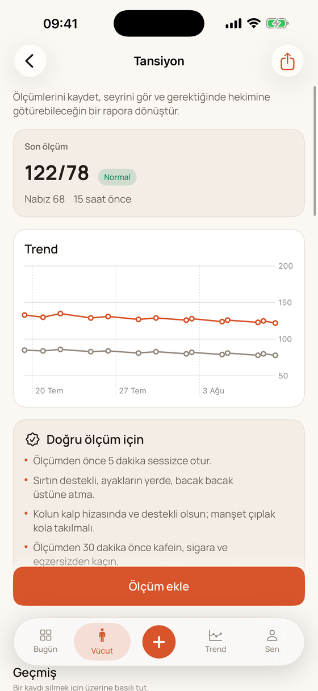
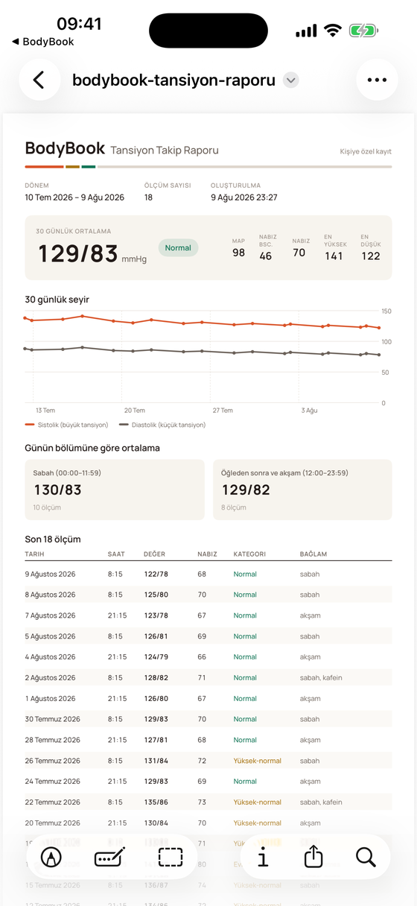
Sistolik, diastolik, nabız. Bağlam etiketleri opsiyonel; geçmiş bir ölçümü sonradan girmek için tarih alanını açman yeterli.
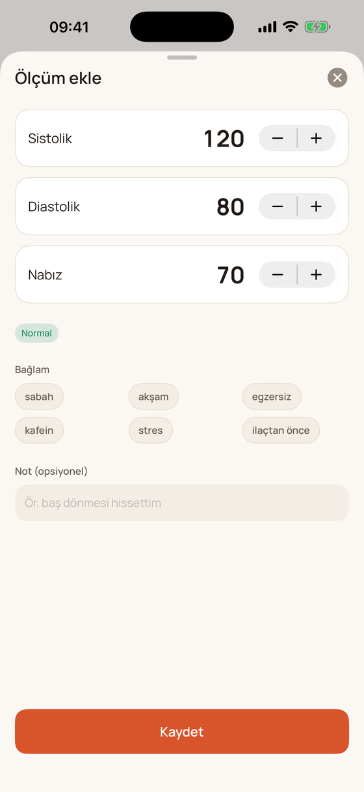
Ekranın omurgası ilaç listesi değil, bugünün dozları. Buraya “hangi ilaçlarım var” diye değil, almam gereken şeyi işaretlemek için giriyorsun.
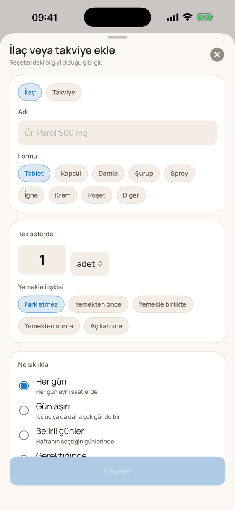
Sabah ve akşam adımlarını bir kez tanımlarsın, her gün işaretlersin. Üst üste tamamladığın günler seri olarak sayılır.
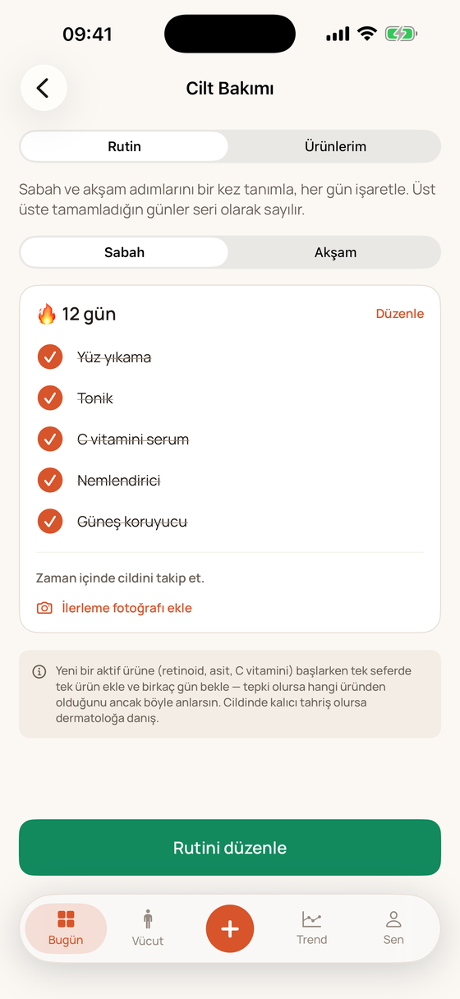
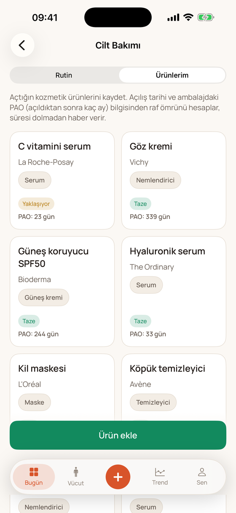
Benin yerini vücut haritasında işaretlersin. Fotoğraf çekerken önceki karenin soluk kopyası ekranda durur — aynı açıyı yakalarsın, değişimi gözle kovalamak yerine karşılaştırırsın.
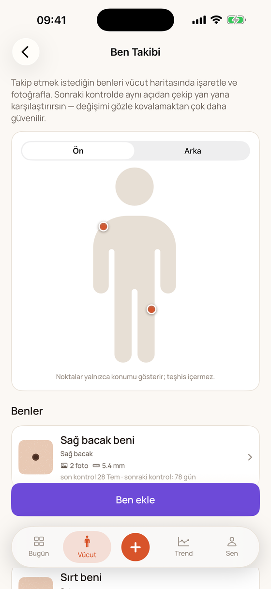
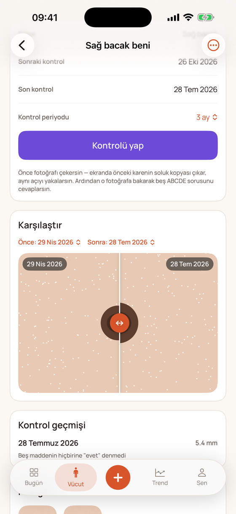
Su kaydının tek zorluğu sürtünme: günde altı kez açılacak bir ekranda üç dokunuş fazla. Hedef halkasının hemen altında hazır miktarlar var.
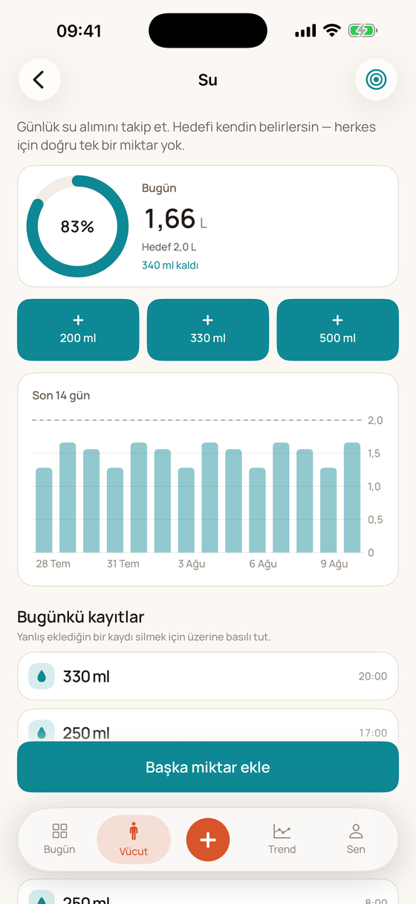
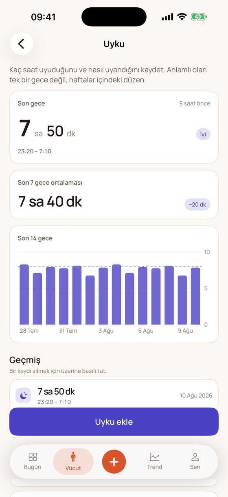
Kısa uyuduğun sabahlarda tansiyonun ne oluyor? Dozları tam işaretlediğin günlerle eksik kalan günler arasında fark var mı? BodyBook bunları karşılaştırır — iddia etmeden, yalnızca senin kayıtlarının ortalaması olarak.
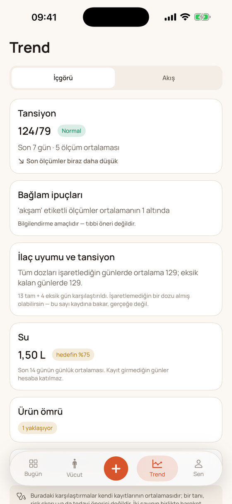
Su ve uyku zaten saatinde toplanıyor. Bunları bir de elle girmeni istemek modülü ölü doğurur — o yüzden köprü var, ama zorunlu değil.
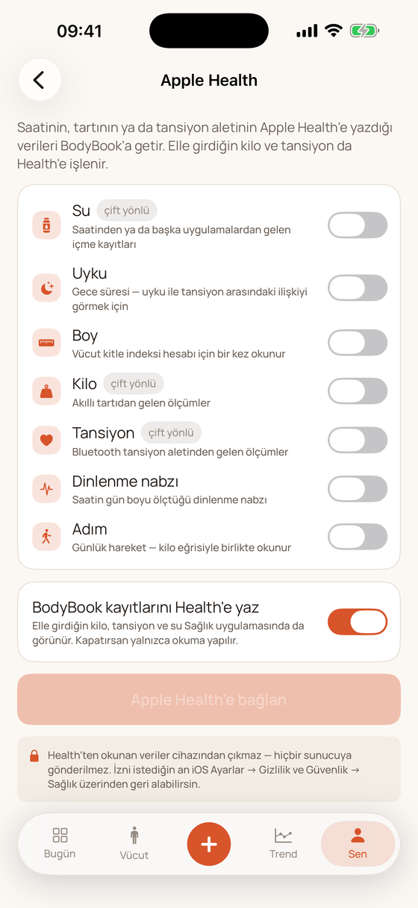
Ölçümlerin, fotoğrafların ve notların telefonundan çıkmıyor. Giriş yapmıyorsun, e-posta vermiyorsun. Reklam yok, veri satışı yok.
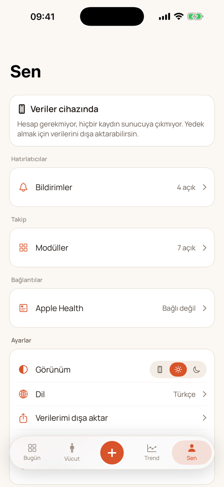
Açılışta yalnızca istediğin modülleri seçersin. Kapattığın bir modül uygulamanın hiçbir yerinde görünmez: ana ekran karosu, kayıt listesi, Vücut sekmesi dahil.
Ölçüm, trend, doktor raporu
Eğri ve vücut kitle indeksi
AM/PM rutin ve ürün raf ömrü
Fotoğrafla karşılaştırma
Doz hatırlatıcı ve alım kaydı
Günlük hedef
Süre ve düzen
Uygulama çalışır durumda, App Store gönderimi hazırlanıyor. Denemek ister ya da bir şey sormak istersen yaz.
BodyBook bir wellness ve öz-izleme uygulamasıdır; tıbbi cihaz değildir. Teşhis koymaz, risk skoru üretmez, ilaç ya da doz önerisi vermez, etkileşim kontrolü yapmaz. Sağlığınla ilgili kararları hekiminle ver.